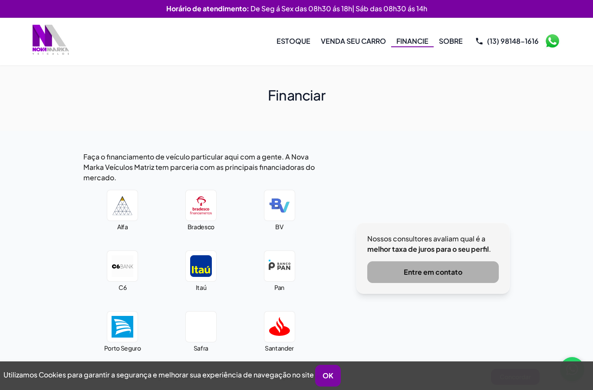
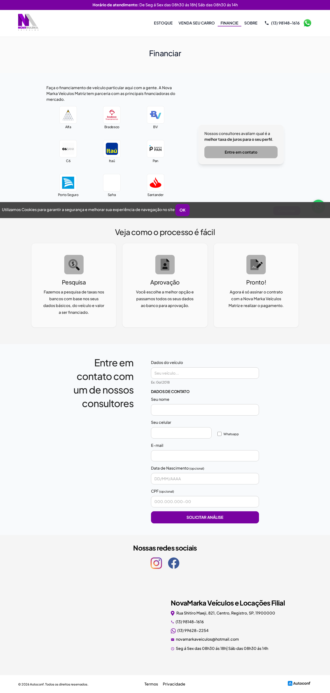

Sistema de Investigação de Marca e Identidade Online
https://novamarkaveiculos.com.br/financie
Prioridade: MEDIUM · Cenário: B_AMBIGUOUS_COMMUNICATION · Revisão humana: PENDING
A página corresponde a uma loja de veículos multimarcas operando legitimamente em nome próprio, utilizando a marca BV de forma secundária em uma vitrine multibanco de financiadores parceiros. Contudo, enquadra-se em B_AMBIGUOUS_COMMUNICATION (REVIEW_REQUIRED) por intermediar financiamento e coletar dados de clientes sem exibir os avisos regulatórios obrigatórios de correspondente bancário (Resolução CMN nº 4.935/2021), ouvidoria e identificação por CNPJ. [Revisor: CONFIRM] A página pertence a uma revendedora de veículos (Nova Marka Veículos) que atua na intermediação de financiamentos e capta dados cadastrais dos clientes (incluindo CPF). A marca BV é exibida em ambiente multibancos junto a outras instituições financeiras parceiras, sob identidade visual própria da loja. Contudo, ausentam-se a razão social formal, CNPJ e os avisos regulatórios obrigatórios previstos na Resolução CMN nº 4.935/2021 (declaração de correspondente bancário e canais de ouvidoria), justificando a manutenção de REVIEW_REQUIRED.


| Ref | Tipo | Local | Conteúdo |
|---|---|---|---|
| E-URL | domain | url | URL final: https://novamarkaveiculos.com.br/financie (domínio: novamarkaveiculos.com.br) |
| E-DISC-001 | text | search_index | Índice de busca (serper): Financie - Nova Marka Veículos Matriz — Faça o financiamento de veículo particular aqui com a gente. A Nova Marka ... Santander. BV Financeira. Itaú. Banco Safra ... |
| E-SHOT-VIEWPORT | screenshot | viewport | evidence/C9041b00292/attempt-1/viewport.png (sha256 11da316d4d25c87e…) |
| E-SHOT-FULL | screenshot | page | evidence/C9041b00292/attempt-1/fullpage.png (sha256 2d5cf341369e3c70…) |
| E-TITLE | title | head | Financiamento de veículos | Nova Marka Veículos Matriz | Nova Marka Veículos Matriz |
| E-META-1 | meta | head | description: A Nova Marka Veículos Matriz tem parceria com as principais financiadoras do mercado. Ótimas condições nas parcelas e entradas. Nossos consultores avaliam qual é a melhor taxa de juros para o seu perfil e em até 30 minutos. |
| E-META-2 | meta | head | og:site_name: Nova Marka Veículos Matriz |
| E-META-3 | meta | head | og:title: Carros usados, seminovos em Registro - Compra e venda - Nova Marka Veículos Matriz |
| E-META-4 | meta | head | og:description: A Nova Marka Veículos Matriz tem parceria com as principais financiadoras do mercado. Ótimas condições nas parcelas e entradas. Nossos consultores avaliam qual é a melhor taxa de juros para o seu perfil e em até 30 minutos. |
| E-HEAD-1 | heading | page | Financiar |
| E-HEAD-2 | heading | page | Alfa |
| E-HEAD-3 | heading | page | Bradesco |
| E-HEAD-4 | heading | page | BV |
| E-HEAD-5 | heading | page | C6 |
| E-HEAD-6 | heading | page | Itaú |
| E-HEAD-7 | heading | page | Pan |
| E-HEAD-8 | heading | page | Porto Seguro |
| E-HEAD-9 | heading | page | Safra |
| E-HEAD-10 | heading | page | Santander |
| E-HEAD-11 | heading | page | Veja como o processo é fácil |
| E-HEAD-12 | heading | page | Nossas redes sociais |
| E-HEAD-13 | heading | page | NovaMarka Veículos e Locações Filial |
| E-HDR | text | header | ESTOQUE VENDA SEU CARRO FINANCIE SOBRE (13) 98148-1616 WhatsApp |
| E-FOLD | text | viewport (acima da dobra) | Utilizamos Cookies para garantir a segurança e melhorar sua experiência de navegação no site OK Horário de atendimento: De Seg á Sex das 08h30 ás 18h| Sáb das 08h30 ás 14h Estoque Venda seu Carro Financie Sobre (13) 98148-1616 WhatsApp Financiar Faça o financiamento de veículo particular aqui com a gente. A Nova Marka Veículos Matriz tem parceria com as principais financiadoras do mercado. Alfa Bradesco BV C6 Itaú Pan Porto Seguro Safra Santander Nossos consultores avaliam qual é a melhor taxa de juros para o seu perfil . Entre em contato Utilizamos Cookies para garantir a segurança e melhorar sua experiência de navegação no site. Concordar |
| E-FTR | text | footer | Nossas redes sociais NovaMarka Veículos e Locações Filial Rua Shitiro Maeji, 821, Centro, Registro, SP, 11900000 (13) 98148-1616 (13) 99628-2254 novamarkaveiculos@hotmail.com Seg á Sex das 08h30 ás 18h| Sáb das 08h30 ás 14h |
| E-NAV | nav | header | <https://novamarkaveiculos.com.br/> | ESTOQUE <https://novamarkaveiculos.com.br/estoque/> | VENDA SEU CARRO <https://novamarkaveiculos.com.br/venda-seu-carro/> | FINANCIE <https://novamarkaveiculos.com.br/financie/> | SOBRE <https://novamarkaveiculos.com.br/sobre/> | (13) 98148-1616 <tel:13981481616> | WhatsApp <https://wa.me/5513996282254> |
| E-CTA-1 | cta | page | OK <javascript:void(0);> |
| E-CTA-2 | cta | page | Entre em contato <https://novamarkaveiculos.com.br/financie#contact-finance> |
| E-CTA-3 | cta | page | SOLICITAR ANÁLISE |
| E-CTA-4 | cta | page | Concordar |
| E-CONTACT-1 | contact | header | (13) 98148-1616 <tel:13981481616> |
| E-CONTACT-2 | contact | header | WhatsApp <https://wa.me/5513996282254> |
| E-CONTACT-3 | contact | footer | Instagram <https://www.instagram.com/novamarka_veiculos> |
| E-CONTACT-4 | contact | footer | Facebook <https://www.facebook.com/novamarkaveiculos> |
| E-CONTACT-5 | contact | footer | (13) 98148-1616 <tel:13981481616> |
| E-CONTACT-6 | contact | footer | (13) 99628-2254 <https://wa.me/5513996282254> |
| E-CONTACT-7 | contact | footer | novamarkaveiculos@hotmail.com <mailto:novamarkaveiculos@hotmail.com> |
| E-CONTACT-8 | contact | page | WhatsApp <https://wa.me/5513996282254> |
| E-IMG-1 | image | header (acima da dobra) | imagem alt='Nova Marka Veículos Matriz' src=https://assets.autoconf.net.br/sites/nova-marka-veiculos-multimarcas/logo.png?v=f7d3c9b4aa (84x69, acima da dobra) |
| E-IMG-2 | image | page (acima da dobra) | imagem alt='BV' src=https://static.autoconf.com.br/partners/bv@2x.png (50x50, acima da dobra) |
| E-TXT-001 | text | page | Horário de atendimento: De Seg á Sex das 08h30 ás 18h| Sáb das 08h30 ás 14h |
| E-TXT-002 | text | page | |
| E-TXT-003 | text | page | BV |
| E-TXT-004 | text | page | Fazemos a pesquisa de taxas nos bancos com base nos seus dados básicos, do veículo e valor a ser financiado. |
| E-TXT-005 | text | page | Você escolhe a melhor opção e passamos todos os seus dados ao banco para aprovação. |
| E-TXT-006 | text | page |
| Dimensão | Sinal | Achado | Refs |
|---|---|---|---|
| VISUAL_IDENTITY | LEGITIMATE | Predominância visual da marca da loja Nova Marka Veículos, sem cópia de identidade visual do Banco BV. | E-SHOT-VIEWPORT E-IMG-1 |
| DECLARED_COMMERCIAL_IDENTITY | NEUTRAL | A loja se identifica como NovaMarka Veículos e Locações Filial com endereço e telefones locais, porém sem CNPJ explícito. | E-FTR E-TITLE |
| CORRESPONDENT_TRANSPARENCY | CONFUSION | Inexistência de aviso obrigatório de correspondente bancário conforme Res. CMN nº 4.935/2021 e ausência de contato de ouvidoria institucional. | E-FOLD E-FTR |
| INSTITUTIONAL_LANGUAGE | LEGITIMATE | Linguagem em terceira pessoa, informando que pesquisa taxas e encaminha dados aos bancos para aprovação. | E-TXT-004 E-TXT-005 |
| LOGO_USAGE | NEUTRAL | Logotipo atual do Banco BV exibido em tamanho reduzido em grade multibanco/financiadoras parceiras. | E-IMG-2 E-HEAD-4 E-SHOT-VIEWPORT |
| SERVICE_JOURNEY | NEUTRAL | Formulário de captação de dados para cotação e intermediação de financiamento automotivo. | E-CTA-3 E-SHOT-FULL |
| CONTACT_CHANNELS | LEGITIMATE | Canais de contato próprios da loja de veículos (telefones com DDD 13, WhatsApp e e-mail). | E-CONTACT-1 E-CONTACT-6 E-CONTACT-7 |
| CONSUMER_CONFUSION | NEUTRAL | Risco de personificação baixo devido à presença clara de outros bancos concorrentes, embora falte transparência sobre o vínculo formal de correspondência. | E-SHOT-VIEWPORT E-HEAD-2 E-HEAD-3 E-HEAD-10 |
A página corresponde a uma loja de veículos multimarcas operando legitimamente em nome próprio, utilizando a marca BV de forma secundária em uma vitrine multibanco de financiadores parceiros. Contudo, enquadra-se em B_AMBIGUOUS_COMMUNICATION (REVIEW_REQUIRED) por intermediar financiamento e coletar dados de clientes sem exibir os avisos regulatórios obrigatórios de correspondente bancário (Resolução CMN nº 4.935/2021), ouvidoria e identificação por CNPJ.
Nenhum CNPJ ou razão social identificáveis no conteúdo coletado.
| Tipo | Valor | Ref | Contexto |
|---|---|---|---|
| domain | novamarkaveiculos.com.br | E-URL | |
| novamarkaveiculos@hotmail.com | E-FTR | ||
| social_profile | https://www.instagram.com/novamarka_veiculos | E-CONTACT-3 | |
| social_profile | https://www.facebook.com/novamarkaveiculos | E-CONTACT-4 | |
| bv@2x.png | E-IMG-2 | ||
| trade_name | Nova Marka Veículos Matriz | E-META-2 | |
| phone | (13) 98148-1616 | E-HDR | |
| phone | (13) 99628-2254 | E-FTR | |
| phone | 13981481616 | E-NAV | |
| WhatsApp <https://wa.me/5513996282254> | E-CONTACT-2 | ||
| (13) 99628-2254 <https://wa.me/5513996282254> | E-CONTACT-6 |
Mapeamento indicativo para apoio à auditoria. Não constitui conclusão regulatória; a decisão definitiva pertence à auditoria.
Fonte: NORMATIVE
Art. 14. O contrato de correspondente deve estabelecer: [...] II - vedação à utilização, pelo contratado, de logomarca ou de outros atributos que sejam similares aos adotados pela instituição contratante em suas agências, postos de atendimento, sítio eletrônico na internet, aplicativo ou outras plataformas de comunicação em rede;
Evidência observada: E-IMG-1 E-SHOT-VIEWPORT
Fonte: NORMATIVE
Art. 14. O contrato de correspondente deve estabelecer: [...] III - divulgação ao público, pelo contratado, de sua condição de prestador de serviços à instituição contratante, identificada pelo nome com que é conhecida no mercado, com descrição dos produtos e serviços oferecidos e canais de contato da instituição contratante, inclusive de sua ouvidoria, em local visível, em destaque e em formato legível, por meio de: a) sítio eletrônico do correspondente na internet, acessível na página inicial; b) aplicativo e outras plataformas de comunicação em rede do correspondente; [...]
Hipótese: Divulgação ao público da condição de prestador de serviços/parceria ausente, insuficiente, ambígua ou sem destaque. A norma disciplina correspondentes contratados; o responsável não foi identificado como correspondente.
Evidência observada: E-FOLD E-FTR E-HEAD-13 E-HEAD-4 E-IMG-2 E-TXT-004 E-TXT-005
Informação faltante:
Fonte: NORMATIVE
Art. 3º O correspondente atua por conta e sob as diretrizes da instituição contratante, que assume inteira responsabilidade pelo atendimento prestado aos clientes e usuários por meio do contratado.
Evidência observada: E-CONTACT-1 E-CONTACT-6 E-CONTACT-7
Se o responsável não for correspondente contratado, os indícios podem caracterizar uso indevido de marca ou fraude, fora do escopo da Res. 4.935: avaliar encaminhamento às áreas jurídica/segurança.
Limitações: requisitos contratuais/internos não fornecidos: mapeamento limitado ao texto normativo
Decisão: CONFIRM → REVIEW_REQUIRED / MEDIUM
A página pertence a uma revendedora de veículos (Nova Marka Veículos) que atua na intermediação de financiamentos e capta dados cadastrais dos clientes (incluindo CPF). A marca BV é exibida em ambiente multibancos junto a outras instituições financeiras parceiras, sob identidade visual própria da loja. Contudo, ausentam-se a razão social formal, CNPJ e os avisos regulatórios obrigatórios previstos na Resolução CMN nº 4.935/2021 (declaração de correspondente bancário e canais de ouvidoria), justificando a manutenção de REVIEW_REQUIRED.
| Tema | Severidade | Questionamento | Refs |
|---|---|---|---|
| domain_attribution | MEDIUM | Responsável pela página não identificado; a conclusão sobre a marca não pode ser atribuída a um estabelecimento específico. | E-URL |
| Fonte | Consulta / hipótese | URL original | Título / trecho |
|---|---|---|---|
| serper | "bv financeira" "Safra" "Santander" financiamento veículos -site:bv.com.br -site:bancobv.com.br -site:bvfinanceira.com.br -site:bvinvestimentos.com.br -site:napista.com.br -site:bvopen.com.br -site:meufinanciamentosolar.com.br -site:votorantim.com.br -site:vam.com.br -site:reclameaqui.com.br -site:jusbrasil.com.br -site:jus.br H13-legacy-focus:vitrine-multibanco | https://novamarkaveiculos.com.br/financie | Financie - Nova Marka Veículos Matriz Faça o financiamento de veículo particular aqui com a gente. A Nova Marka ... Santander. BV Financeira. Itaú. Banco Safra ... |
Original: https://novamarkaveiculos.com.br/financie
Final: https://novamarkaveiculos.com.br/financie
| Artefato | Caminho | SHA-256 | Bytes |
|---|---|---|---|
| screenshot_viewport | evidence/C9041b00292/attempt-1/viewport.png | 11da316d4d25c87ec2441dbb496248a62c7ddbbc5afb4bc35024aab3040a807d | 80422 |
| screenshot_full | evidence/C9041b00292/attempt-1/fullpage.png | 2d5cf341369e3c70f2fc5b6fded3cca21e9926476ebf37b2de9489482beb05f9 | 200950 |
| html | evidence/C9041b00292/attempt-1/page.html.txt | 6b0373474754fa248ebea5749cfc5d50ae25a2ee2fd449cb4461a4af22bf0757 | 72405 |
| text | evidence/C9041b00292/attempt-1/text.txt | 1ad1f101e97149697e86792ef2d4dec8a667bfb46db621091e989e921b86db8a | 1518 |
| page_data | evidence/C9041b00292/attempt-1/page.json | 128bf2b1a5a3768bc50f244de506cb7c3936fedb6fa36c488d3c372cccbacb11 | 13014 |
| Quando | De | Para | Nota |
|---|---|---|---|
| 2026-11-25T20:48:32+00:00 | DISCOVERED | QUEUED | prioritised (score 0.5) |
| 2026-11-25T20:56:15+00:00 | QUEUED | COLLECTING | |
| 2026-11-25T20:56:25+00:00 | COLLECTING | COLLECTED | |
| 2026-11-25T20:56:25+00:00 | COLLECTED | ANALYZING | |
| 2026-11-25T20:56:43+00:00 | ANALYZING | REVIEWING | |
| 2026-11-25T20:56:52+00:00 | REVIEWING | COMPLETED |